|
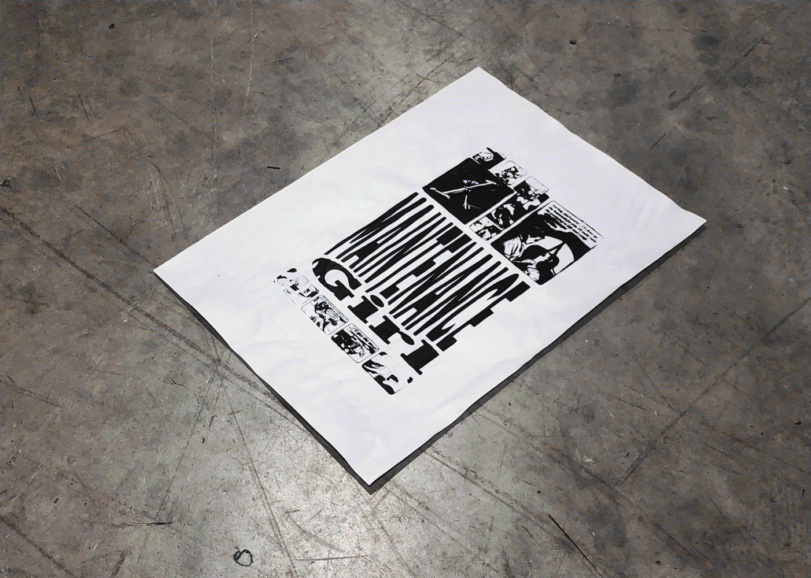
Maintenance / Unyielding (2023) Assorted screenprinting explorations. |
|
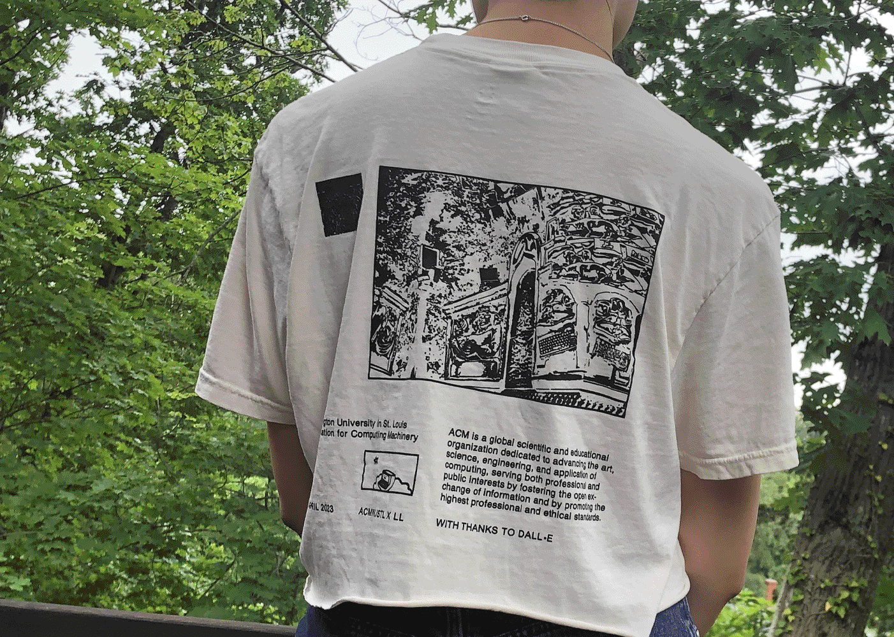
ACM WUSTL Apparel (2023) Jackets and shirts for ACM WashU exec team. |
|
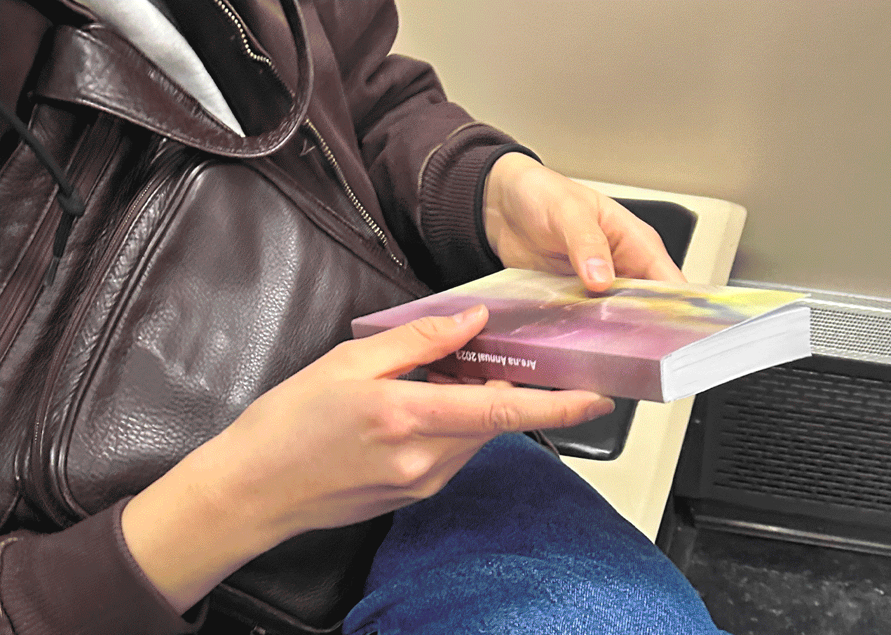
Are.na Annual (2023) A collection of essays, interviews, and artwork from the Are.na community. |
|
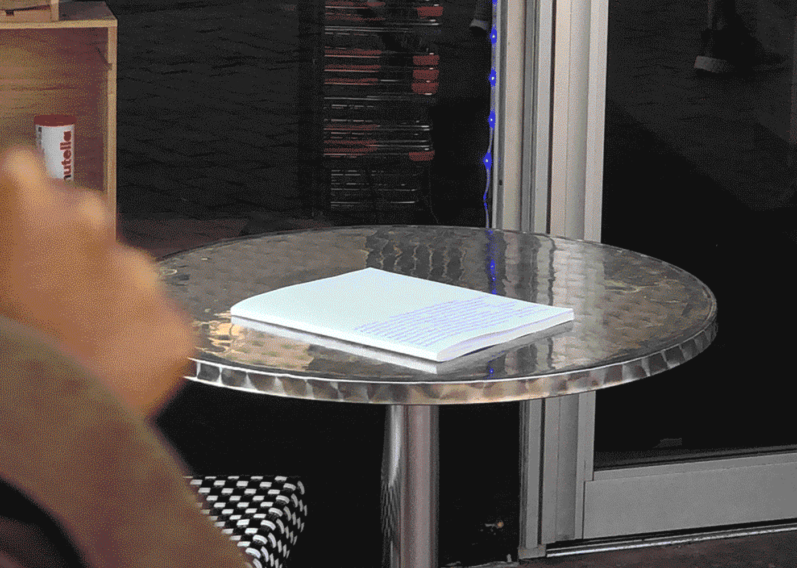
Remake (2022) An annual journal celebrating first-year work from Washington University in St. Louis. |
|
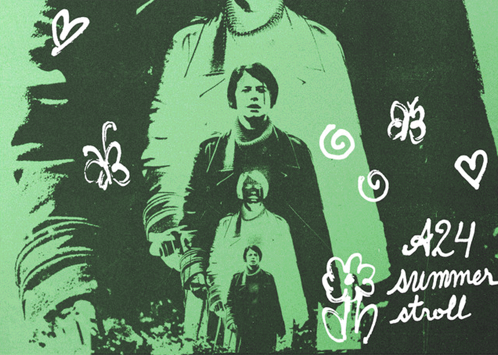
Songs for a Summer Stroll (2022) Playlist cover for A24’s “Songs for a Summer Stroll”, promoting the film MEN. With RegretsOnly. |
|
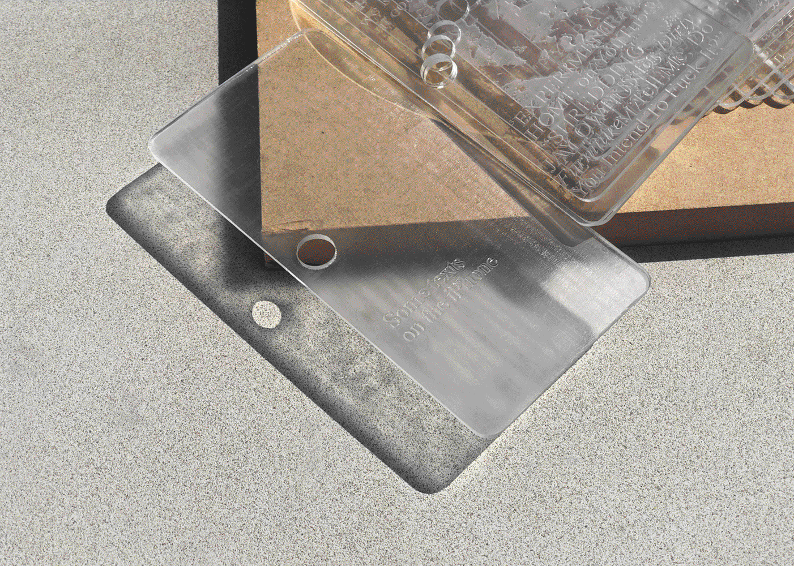
Some texts on the iPhone (2022) An art book containing various writings about and imagery of the iPhone to explore the device’s role in contemporary American society as status symbol, erotic object, spectacle of lightness, and luxury destroyed. |
|
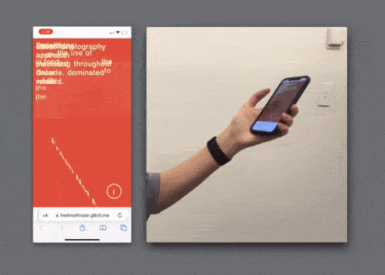
Fresh Not Frozen (2022) A small mobile site that delivers bite-size factoids about the American TV dinner, perfectly portioned for distracted reading. |
|
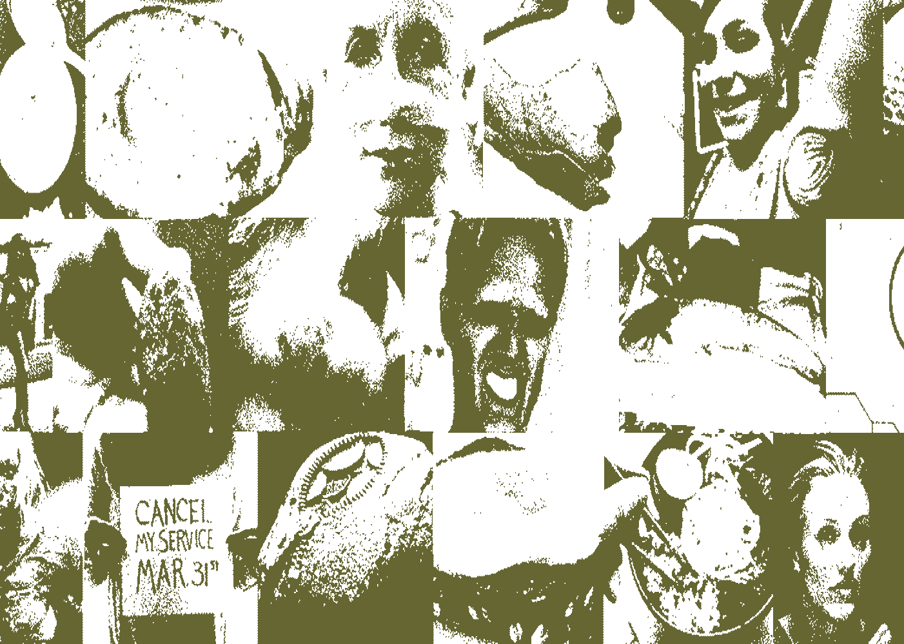
Feelings at the Edge: A Chumbox Tour (2022) An essay about sketchy internet chumbox ads. For Coven Berlin. |
|
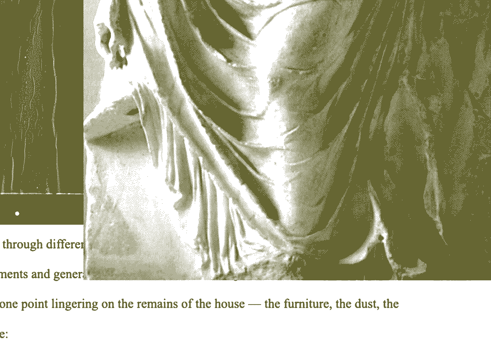
The Mockup Aesthetic: Gestures of Transgression (2022) An interactive essay about the politics of wheatpaste mockups. For FLAT. |
|
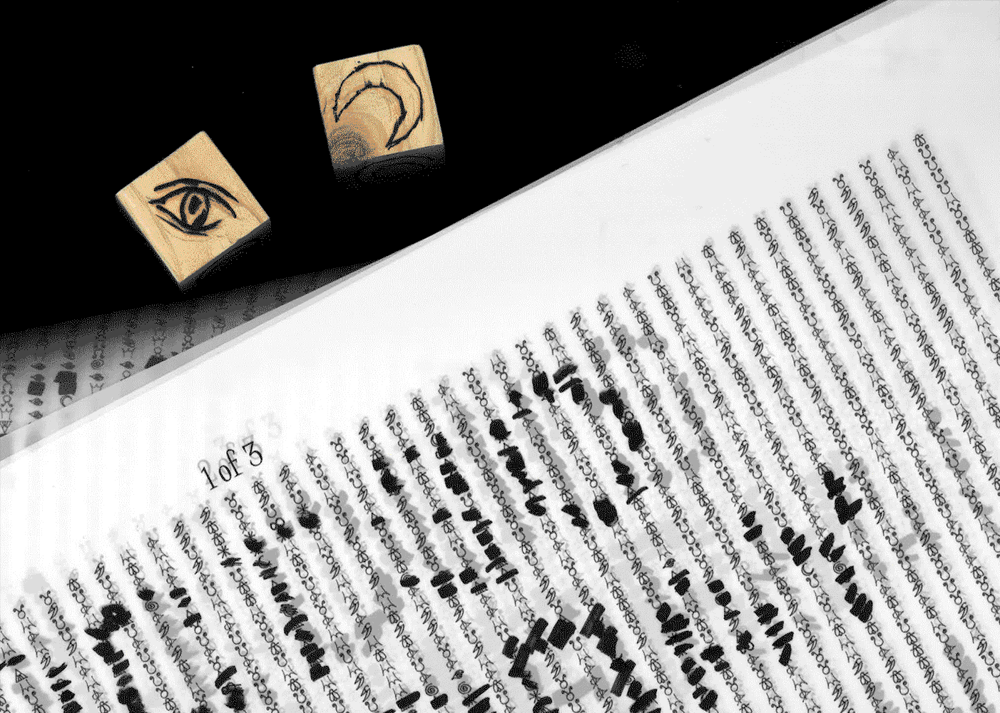
Ouija Board Seance (2021) A crowdsourced poster that plays with the gesture of obscuring and revealing information. A collaboration with Betsy Ellison. |

Basic Space (2021) Assets for a speculative festival, Basic Space, that explores the potential of abstracting meme formats. |

Refringo (2021) An interactive modular alphabet that explores chance relationships between part and whole. |
|
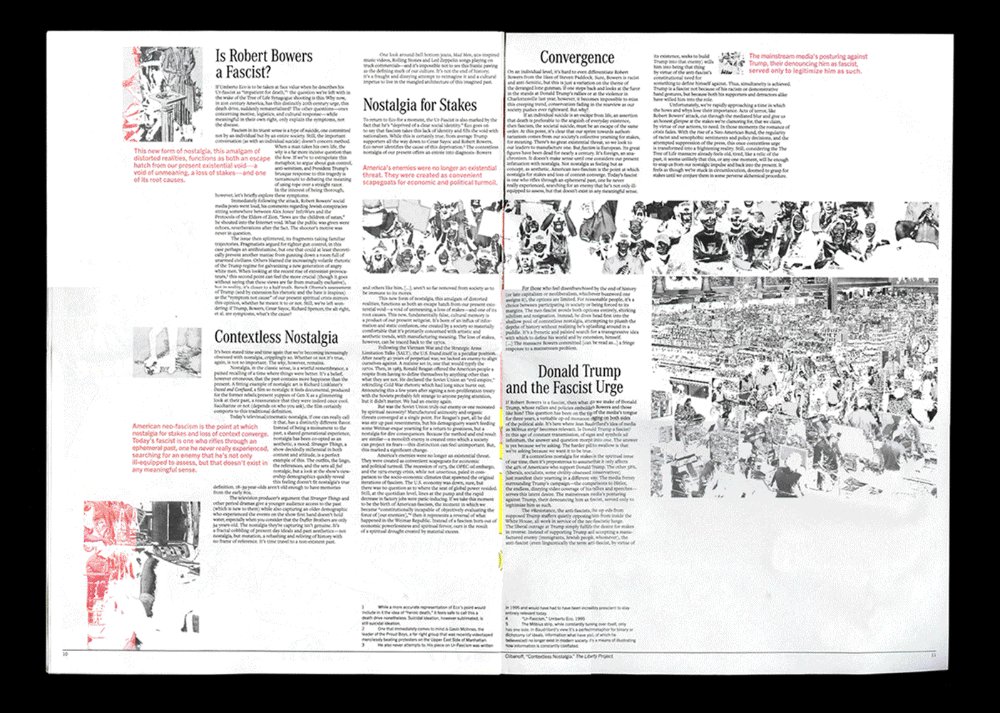
Nostalgia Loop (2021) A broadsheet housing two articles about the role of nostalgia in global and American politics. Influenced by the comfort of vintage food graphics, this newspaper considers how complacency can be dangerous. |
|
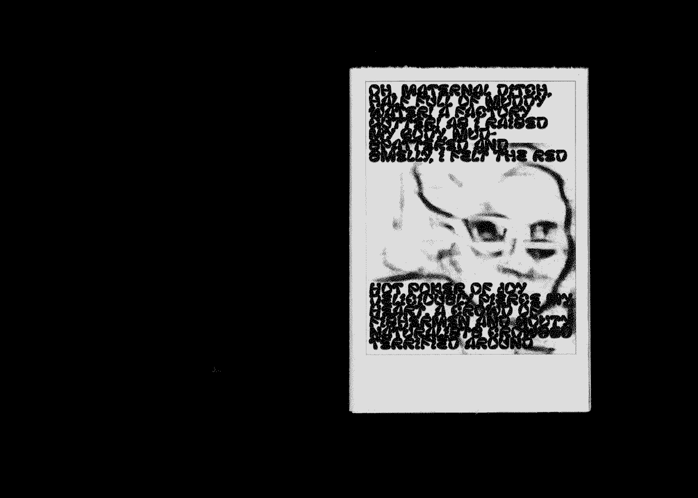
Meme Engine Sampler (2021) Abstracting meme formats via a custom-made Drawbot program. A collaboration with Nathan Springman. |
|
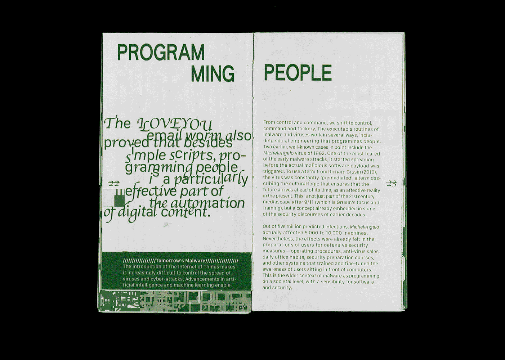
This book you are holding is a junkyard (2020) An adaptation of an essay about computer glitches and malware. |
|
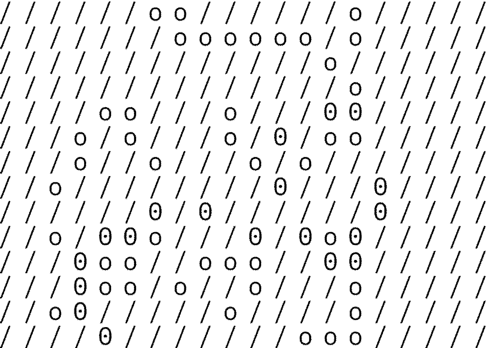
memory garden (2020) A digital zen garden: collecting worldwide memories submitted anonymously on the little memory app; exploring ASCII art and the metaphor of memories as blossoming flowers. |

A Window For Two (2020) A program exploring the poetics of screenshots; watch digital sunsets with your computer. |
Aspiring morning person scurrying around in New England. Designer by trade.
Information
I work primarily across print, digital, and experience design. Some of my conceptual interests include advertising & Americana, cringe & embarassment online, diagrams and memes, and interfaces & intimacy. Dedicated to silly and serious things.
Always down to collaborate. Available for freelance work.
Resume / additional work available upon request.

Colophon
With thanks to Wesley Aptekar-Cassels, whose HTML + CSS list filtering demo helped me lay this website’s foundation, as well as Low-tech Magazine, HTML Energy, and more* for their influence.
Coded from scratch. The images on this website have been dithered to avoid lagginess. For higher resolution photos, please email me.
Dandelion
I've learned from so many folks. In no particular order, some loose webs of people I'd like to acknowledge:
Friends and neighbors: Kehuan, Misha, Sarah, Jina, Nico, Omar, Katherine, Marc, Jonathan, Kim, Andrew, Ange, Daniel, Jon, daniela, Karl, Jake, Trudy, Charlotte, C, R
Thank you: Fruitful School & CSS, Julian Glander, Julio Torres, Ryan Kuo, Mikki Janower, Lauren Fox, Other Internet, Are.na, Andrew Thomas Huang, Space Type, Moniker, Schultzschultz, Rian Phin
and some communities: Good Start, MSRN, CARI, Boston Tech Poetics, DNR, Lightshine Chamber